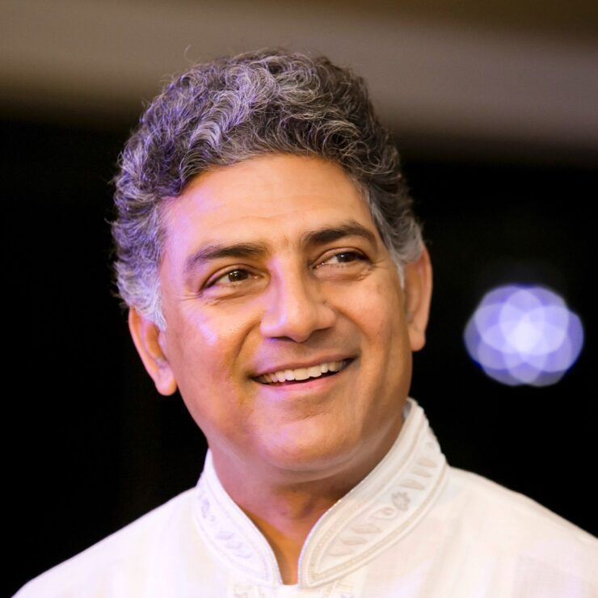

Shri.Ravi Sharma
An accomplished former CEO, Ravi Sharma is now a mentor & philanthropist with a mission of "Spreading Goodness" by supporting initiatives towards Sustainable Society, inclusive Education and Spirituality.
Coming from modest and rural background, Ravi Sharma, intrigued in life by the diminishing goodness in society, felt compelled to enhance it in the world. Today, as a leading philanthropist, he supports & rewards goodness a unique trait that defines him.
A distinguished Alumni of IIT Roorkee and one of the youngest CEOs of Telecom MNC in India, Ravi reached the pinnacle of the corporate sector and served as CEO for 13 years for companies like Alcatel Lucent South Asia, Videocon Telecom, and Adani Power. Tagged as transformational leader with out of box approach, he is known for performance culture and growth.
At the peak of his career @50, Ravi left corporate and fully immersed himself in philanthropy. He established an eco-system and self-propagating mechanism for multiple NGOs under "Mission Chetna," that created & nurtured > 50 NGOs across India having over 10 million beneficiaries today in 11 states of India. He also founded the Prama Jyoti Foundation, adopting schools in the hinterland of India and upgraded them with teachers, infrastructure & computers thus transforming them into modern centers of learning.
A true believer in science and Vedic knowledge, Ravi embraced spirituality as a way of life, and established Subodhanand Foundation, in memory of his spiritual Guru, to spread the knowledge of Vedas.
Passionate about the intersection of technology and infrastructure in India, Ravi is leading IIT Alumni Council as its President, with a network of over 50,000 IITians across globe dedicated to volunteering for India's challenges and sustainability.
In addition, Ravi is Chairman of Telecom Equipment Manufacturing Association (TEMA); Chairperson - Board of Governors for Indian Institute of Information of Technology Una (HP) and Nagpur (Maharashtra).
As the owner of a multidimensional personality, he isn't just a successful professional and philanthropist; but also published poet of Hindi poems Bheegi Ret (भीगी रेत), Model / Actor for brands like Raymond's & Mitsubishi and lyricist of an album "Moonlight Whispers" by Times Music. In
his youth, he also excelled as a state-level sportsman and as presenter on national television.
With a clear vision, positive energy, and a constructive nation-building approach, Ravi inspires his network to become positive change makers and catalysts for spreading goodness in the world!